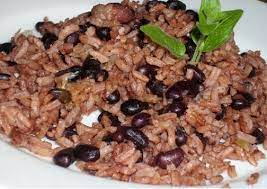

Congris

Description
Congris (aka moros y cristianos) is simply black beans and rice, but the rice is cooked with the black bean soaking water.
Ingredients
Serves 8-10
- 2 yellow onions
- 2 bell peppers
- lots of garlic
- ham stock (enough to fill the pot)
- 2 lbs dry black beans
- 3 cups white rice
- oregano
- cumin
- bay leaves
Steps
- (OPTIONAL) Prepare the stock - see stock recipe
- Soak the beans overnight. Save some of the water
- Chop all the vegetables
- Heat your pot to medium heat and saute the vegetables.
- Add garlic. Saute until fragrant.
- Add some stock.
- Add the beans.
- Add more stock until the beans are covered by about 2 inches of water.
- Add bay leaves, oregano, and cumin.
- Simmer 2-3 hours. Simmer with top off, cooking off the water.
- Cook the rice with the soaked bean water.
- Once rice and beans are ready, mix beans into the rice until you have a good balance.
Home